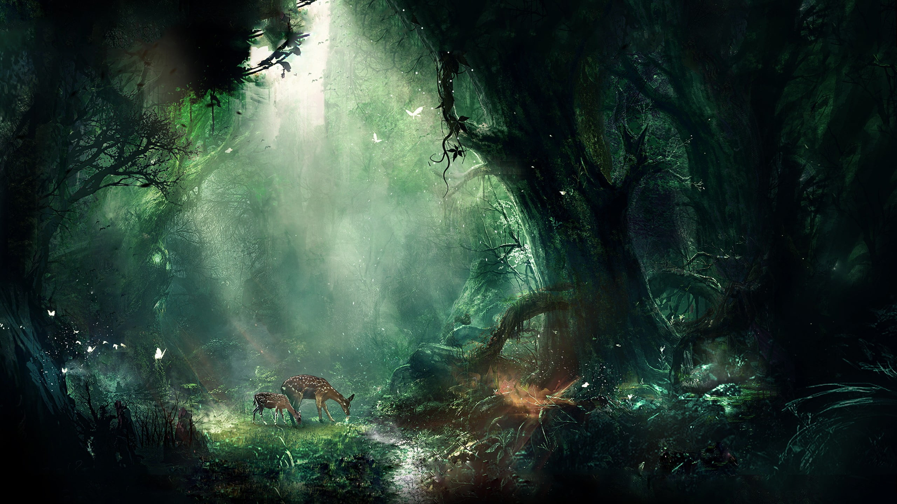

Introduce

Flora dan fauna adalah dua komponen utama dalam ekosistem
yang saling terkait dan berperan penting dalam menjaga
keseimbangan alam. Flora merujuk pada semua jenis tumbuhan
yang ada di suatu wilayah atau ekosistem, sementara fauna
mengacu pada semua jenis hewan yang hidup di wilayah
tersebut.
Flora terdiri dari berbagai macam tumbuhan, mulai dari
tumbuhan tinggi seperti pohon, semak, dan rumput, hingga
tumbuhan mikroskopis seperti alga dan lumut. Tumbuhan
memiliki peran penting dalam menjaga keseimbangan ekosistem.
Mereka menghasilkan oksigen melalui proses fotosintesis,
menyediakan makanan dan tempat berlindung bagi fauna, serta
menyimpan karbon dan mengurangi erosi tanah. Flora juga
berperan dalam siklus air, mempengaruhi pola iklim, dan
menjadi sumber obat-obatan dan bahan makanan bagi manusia.
Sementara itu, fauna meliputi berbagai jenis hewan yang
hidup di suatu wilayah atau ekosistem. Fauna terdiri dari
hewan-hewan besar seperti mamalia, burung, reptil, amfibi,
dan ikan, serta hewan-hewan kecil seperti serangga dan
invertebrata. Fauna memiliki peran penting dalam menjaga
keseimbangan alam. Mereka berpartisipasi dalam rantai
makanan, mengendalikan populasi hama, menyebarkan biji
tumbuhan, dan membantu dalam proses penyerbukan. Beberapa
hewan juga memiliki peran penting dalam penyebaran polen dan
pemupukan tanah.
Flora dan fauna saling bergantung satu sama lain dalam
ekosistem. Tumbuhan menyediakan makanan dan tempat
berlindung bagi hewan, sementara hewan membantu dalam
penyerbukan dan penyebaran biji tumbuhan. Ketika
keseimbangan flora dan fauna terganggu, misalnya akibat
perusakan habitat atau perubahan iklim, maka ekosistem akan
terancam dan dapat mengakibatkan dampak negatif bagi semua
makhluk hidup di dalamnya, termasuk manusia.
Oleh karena itu, penting bagi kita untuk menjaga dan
melestarikan flora dan fauna. Melalui pelestarian habitat
alami, pengelolaan sumber daya alam yang bijaksana, dan
kesadaran akan pentingnya konservasi, kita dapat memastikan
kelangsungan hidup flora dan fauna serta keberlangsungan
ekosistem yang seimbang dan berkelanjutan.
Flora
Flora, pesona ciptaan Tuhan yang memukau. Dalam
kemegahannya, mereka membentangkan keindahan yang tak
terhingga. Seperti lukisan alam yang hidup, flora
menghadirkan warna-warni kehidupan di setiap sudut dunia
ini.
Dengan anggunnya bunga-bunga mekar, mereka menari di
atas
hamparan tanah. Daun-daun hijau bergoyang lembut menari
bersama irama angin. Pohon-pohon menjulang tinggi dengan
kokohnya, menciptakan rindangnya bayang yang
menyejukkan.
Flora adalah karya seni terbesar yang ditawarkan alam.
Dalam
keberagamannya, mereka mengungkapkan keindahan tak
tergantikan. Ada kelembutan kelopak mawar, keceriaan
paduan
warna bunga matahari, dan keteguhan pohon cemara yang
menembus langit.
Di dalam flora, terdapat pesan tentang kehidupan yang
subur
dan penuh harapan. Mereka mengajarkan kita tentang
kesabaran
dan kekuatan dalam bertumbuh. Dalam setiap daun yang
bergetar, kita dapat merasakan detak kehidupan yang tak
pernah berhenti.
Mari kita hargai dan lestarikan flora, sebagai penjaga
keindahan alam. Dengan menghormati mereka, kita
menghormati
siklus kehidupan dan keajaiban penciptaan. Dalam
kehadiran
flora, kita merasakan keajaiban alam yang tak terhingga,
mengalami kedamaian dan ketenangan yang hanya dapat
ditemukan dalam keindahan alam yang tumbuh dan bersemi
di
sekitar kita.
Fauna
Fauna, keajaiban hidup yang menghiasi dunia ini. Seperti
orkestra alam yang indah, mereka menciptakan harmoni
melalui
nyanyian mereka yang beragam. Ada kelembutan
burung-burung
yang menyapa pagi, kecepatan dan keanggunan kijang yang
melintas di padang savana, serta kekuatan gagah singa
yang
menguasai kerajaannya.
Fauna adalah kehidupan yang penuh warna dan keajaiban.
Mereka datang dalam berbagai bentuk dan ukuran, dari
serangga yang tak terhitung jumlahnya hingga mamalia
yang
menjulang tinggi. Setiap spesies fauna memiliki keunikan
dan
keindahan yang khas, menambahkan pesona alam yang tak
ternilai.
Dalam kehadiran mereka, fauna mengajarkan kita tentang
kesederhanaan, keberanian, dan keajaiban alam. Mereka
mengajak kita untuk melihat keindahan alam yang tak
terduga
dan menghargai keragaman kehidupan yang ada di sekitar
kita.
Melalui kehadiran mereka, kita merasakan sentuhan
kehidupan
yang ajaib, mengalami keajaiban dunia yang tersembunyi
di
dalam hutan, padang rumput, dan lautan yang luas.
Fauna menghadirkan inspirasi dan kekaguman. Mereka
menjadi
lambang kebebasan, keanggunan, dan kekuatan alam. Dalam
perjalanan hidup mereka, mereka menghadapi tantangan dan
menemukan cara untuk bertahan hidup, memberikan kita
pelajaran tentang ketangguhan dan adaptasi.
Mari kita jaga dan lestarikan fauna, karena mereka
adalah
bagian tak terpisahkan dari kehidupan dan keindahan
dunia
ini. Dalam keragaman dan keunikan mereka, kita menemukan
keajaiban yang tak terhingga. Melalui pemahaman dan rasa
hormat terhadap fauna, kita membuka diri terhadap
keindahan
alam yang luar biasa dan menggenggam keajaiban dunia di
telapak tangan kita.